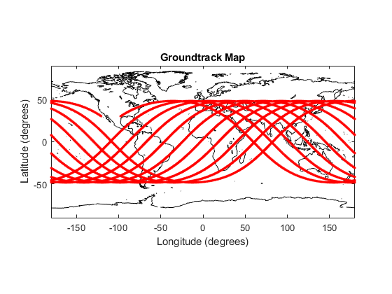

Task 2
Here is the code for task 2
mu = 398600.4415; j2 = 0.0010826267; radEarth = 6378.1363; % km a = 6500; e = 0.001; ta1 = 20; % In Degrees! E = @(ta) (2*atan2(sqrt(1-e)*tan(deg2rad(ta)/2),sqrt(1+e))); % in rad E1 = E(ta1); lat1 = 30.3; % degrees N lon1 = 360 - 120.6; % degrees E n = 10; lon2 = 360 - 97.7; % degrees E lat2 = lat1; g = 9.81/1000; % km/s^2 p = a*(1-e^2); % semilatus rectum Per = 2*pi*sqrt(a^3/mu); % Period in seconds r1 =(p/(1+e*cosd(ta1))); V = @ (r) (sqrt(g * radEarth^2 * (2/r - 1/a))); V1 = V(r1); Vc1 = sqrt(g*radEarth^2/r1); gamma1 = acosd(sqrt(p/r1))*(Vc1/V1); we = 2*pi/86164; % initialization t1 = (Per/(2*pi))*(E1 - e*sin(E1)); lon2e = rad2deg(deg2rad(lon2) + n*we*Per); % lon2e in deg t2et1 = (Per/360)*(lon2e - lon1); % in deg % first iteration dellon12e = lon2e - lon1 + rad2deg(we*t2et1); % in deg ta2e = acosd(sind(lat2)*sind(lat1) + cosd(lat2)*cosd(lat1)*cosd(dellon12e)) + ta1; % in deg t2e = (Per/(2*pi))*(E(ta2e) - e*sin(E(ta2e))); az1 = asind(sind(dellon12e)*cosd(lat2) / sind(ta2e - ta1)); % in deg i1 = acosd(sind(az1)*cosd(lat1)); % in deg % Oblateness Correction (only for first iteration) nodalreg = ((-1*1.5*sqrt(mu)*j2*radEarth^2)/(((1-e^2)^2)*a^(7/2)))*cosd(i1); %draan/dt apsreg = ((-1.5*(sqrt(mu)*j2*radEarth^2))/(((1-e^2)^2)*a^(7/2))) * (2.5*(sind(i1))^2 - 2); %dwdt delw = rad2deg(apsreg*(n*Per + t2et1)); % in deg delraan = rad2deg(nodalreg *(n*Per + t2et1)); %in deg w = asind(sind(lat1)/sind(i1)) - ta1; % in deg dellat = (sind(i1)*cosd(w + ta2e) * delw / cosd(lat2)); dellon = (cosd(i1)*(secd(w + ta2e))^2 * delw)/(1 + (cosd(i1)*tand(w + ta2e))^2) + delraan; lon2 = lon2 - dellon; lat2 = lat2 - dellat; t2e = (Per/(2*pi))*(E(ta2e) - e*sin(E(ta2e))); t2et1 = t2e - t1; % Oblateness Corrected, Iteration 2 lon2e = rad2deg(deg2rad(lon2) + n*we*Per); dellon12e = lon2e - lon1 + rad2deg(we*t2et1); ta2e = acosd(sind(lat2)*sind(lat1) + cosd(lat2)*cosd(lat1)*cosd(dellon12e)) + ta1; t2e = (Per/(2*pi))*(E(ta2e) - e*sin(E(ta2e))); az2 = asind(sind(dellon12e)*cosd(lat2) / sind(ta2e - ta1)); % in deg i2 = acosd(sind(az2)*cosd(lat1)); % in deg t2et1 = t2e - t1; % Iteration 3 dellon12e = lon2e - lon1 + rad2deg(we*t2et1); ta2e = acosd(sind(lat2)*sind(lat1) + cosd(lat2)*cosd(lat1)*cosd(dellon12e)) + ta1; t2e = (Per/(2*pi))*(E(ta2e) - e*sin(E(ta2e))); az3 = asind(sind(dellon12e)*cosd(lat2) / sind(ta2e - ta1)); % in deg i3 = acosd(sind(az3)*cosd(lat1)); % in deg t2et1 = t2e - t1; % Iteration 4 dellon12e = lon2e - lon1 + rad2deg(we*t2et1); ta2e = acosd(sind(lat2)*sind(lat1) + cosd(lat2)*cosd(lat1)*cosd(dellon12e)) + ta1; t2e = (Per/(2*pi))*(E(ta2e) - e*sin(E(ta2e))); az4 = asind(sind(dellon12e)*cosd(lat2) / sind(ta2e - ta1)); % in deg i4 = acosd(sind(az4)*cosd(lat1)); % in deg t2et1 = t2e - t1; % Final Orbit Elements dellonn1 = atand(sind(lat1)*tand(az3)); lonnref = lon1 - dellonn1; raan = lonnref; w = asind(sind(lat1)/sind(i4)) - ta1; [r,v] = oe2rv(mu,a,e,deg2rad(i4),deg2rad(raan),deg2rad(ta1),deg2rad(w)); % Burnout Position and Velocity!!! % Orbit Propagation with J2 tp = 2451545.0; % JD_utc time = tp*86400:1:tp*86400 + 10*Per + t2et1; odeoptions = odeset('RelTol', 1e-10,'AbsTol',1e-20); y0 = [r;v]; [T,traj] = ode45(@j2prop,time,y0,odeoptions); %[T,full] = ode45(@fullprop,time,y0,odeoptions); latplot = zeros(length(T),1); lonplot = zeros(length(T),1); % latplotf = zeros(length(T),1); % lonplotf = zeros(length(T),1); for j = 1:length(T) thetag = we*(T(j) - tp*86400); recf = R3(thetag)*traj(j,1:3)'; %recff = R3(thetag)*full(j,1:3)'; latplot(j) = asind(recf(3)/norm(recf)); % latplotf(j) = asind(recff(3)/norm(recff)); lonplot(j) = atan2d(recf(2),recf(1)); % lonplotf(j) = atan2d(recff(2),recff(1)); end load earth_coastline.mat plot(earth_coastline(:,1),earth_coastline(:,2),'k') hold on plot(lonplot,latplot, '.r') % plot(lonplotf,latplotf, '.r') axis equal xlim([-180,180]) ylim([-90,90]) xlabel('Longitude (degrees)') ylabel('Latitude (degrees)') title('Groundtrack Map')
If given angle related to singularities, put in input 7 (argp).